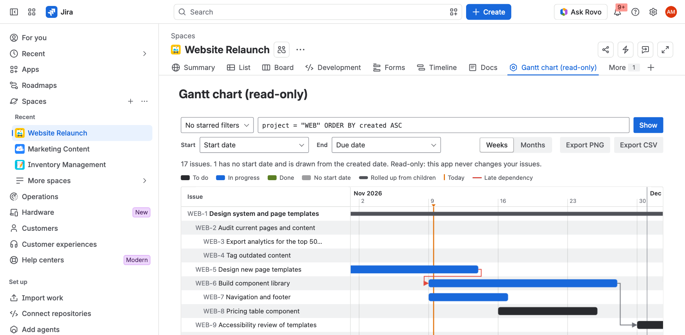

Read-only Gantt Chart for Jira
Draws a Gantt chart from any JQL query or saved filter. The app only reads Jira, so it never changes an issue.

Open the chart
- A Jira admin installs the app from the Atlassian Marketplace.
- Open any project. In the project sidebar, choose Gantt chart (read-only). In some projects it sits under Apps.
The chart works in company-managed and team-managed projects, in software, service and business projects.
Choose the issues
- JQL: the chart starts with every issue in the current project,
project = "KEY" ORDER BY created ASC. Type any JQL and press Show. The order of your query is the order of the rows. - Saved filters: the menu lists the filters you have starred in Jira. Choosing one runs its JQL.
- The chart shows up to 1,000 issues. If your query matches more, the status line says so; narrow the JQL to see the rest.
You only ever see issues you already have permission to see in Jira, because the app reads Jira as you.
Bars and dates
- Start and End pick the date fields for each bar. The defaults are Start date and Due date when your site has them. Any date field, including custom fields, can be used.
- An issue with no start date is drawn from its created date, with a dashed, lighter bar.
- An issue with no end date is drawn as a one day marker, lighter than the rest.
- An epic or parent with no dates of its own gets a thin rolled-up bar over the span of its children.
- Colours follow the status category (to do, in progress, done), as shown in the legend above the chart. They follow your Jira theme, light or dark.
- The orange line is today. The chart opens on today; if all the work is in the past or the future, it opens on the nearest work.
Hover over a bar to see its key, summary, type, status, assignee and dates. Click a bar or a name to open the issue in a new tab.
Rows and nesting
Epics, their child issues and subtasks are nested under their parent. A child whose parent is not in your query stays at the top level. Use Weeks and Months to change the zoom. The dates stay at the top and the issue names stay on the left while you scroll.
Dependencies
Jira Blocks links between issues on the chart are drawn as arrows from the blocking issue to the blocked one. An arrow turns red when the blocked issue starts before the issue blocking it ends, which means the plan cannot work as dated. Other link types are not drawn.
Export
- Export PNG saves the whole chart as an image, for a slide or a status email. If your browser blocks the conversion, the chart is saved as an SVG image instead.
- Export CSV saves one row per issue: key, summary, type, status, assignee, parent, start, where the start came from, end, and the issues it blocks. It opens in Excel, Numbers and Google Sheets.
Exports are made in your browser and saved to your device. They are not sent anywhere.
What the app can and cannot do
The app has one Jira permission, read:jira-work. It uses it to search issues with your JQL, list date fields, and list your starred filters. It cannot create, edit, move, transition or comment on issues, so viewing a chart never changes an issue's dates, rank or updated time. It has no server of its own and makes no connection outside Jira. Your JQL, zoom and date field choices are remembered per project in your own browser. See the privacy policy for details.
Troubleshooting
| You see | What to do |
|---|---|
| No issues match this JQL | Check the query in Jira's issue search. You only see issues you have permission to browse. |
| An error message from Jira under the toolbar | The message is Jira's own JQL error. Fix the field or value it names, then press Show. |
| Bars are all dashed | The chosen Start field is empty on those issues. Pick another date field under Start, or fill the dates in Jira. |
| "The license for this app is not active on this site" | A Jira admin can renew or start a trial under Apps > Manage apps. |
| The menu item is missing from the project sidebar | Ask a Jira admin to check that the app is installed and enabled under Apps > Manage apps. |
Still stuck? Email support@obsidianridgelabs.com with your Jira site and a screenshot. We reply within two business days.
Pricing
Free for up to 10 users. Above that, $1 per user per month, billed by Atlassian with your Jira subscription.